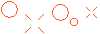
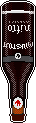

I worked at a beer bar for a good chunk of my life when I was a post-college, directionless young person. I look back fondly on those years, mainly because of the people I met and the things I learned, but also because I developed a taste for craft beer. Here I will try to remember and describe some of my favorites.
I also have some interesting attempts at making beer-related pixel art. Enjoy my amateur creations!
Yards Tavern Spruce holds a special place in my heart because it was the first beer that I really liked and that had a flavor I could recognize. It really does have a spruce taste to it and this is how I learned that I enjoy floral beers.
Tröegs Mad Elf: What a doozy! 'Tis the season! I can have maybe one of these per year because they are mighty strong in both alcohol content and flavor. It's also fun that the batch is slightly different every year.

Left Hand Milk Stout Nitro: As if the milk stout could get any better! Make it smoother and put it in a fun bottle that you get to turn upside down into a glass and watch the cascade.
Goose Island Sofie: I didn't intend for this pixel beer to be so tiny, but look how cute it is! Tasty and fresh like a glass of white wine, but not shitty like a Miller Lite. You get it.